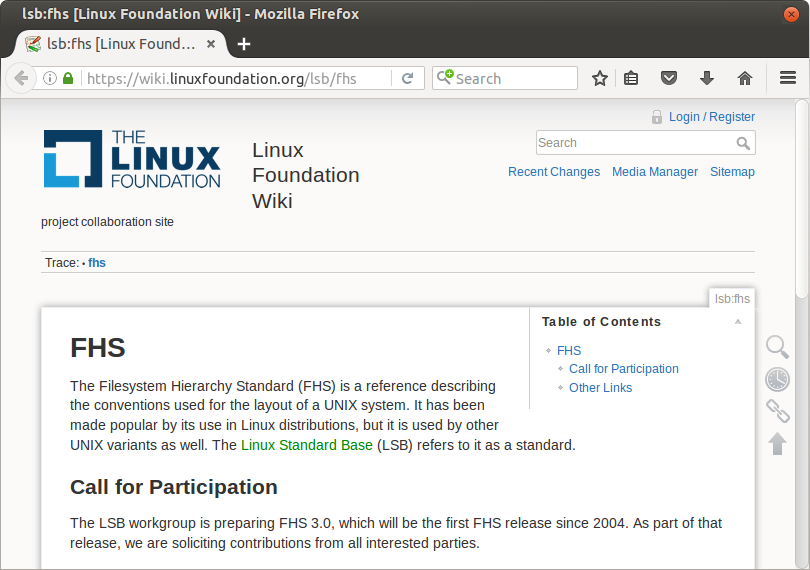

Part IV - Managing Systems
Filesystem Hierarchy Standard
Spend enough time on a Unix-like system and you will stumble across the "root" directories. The typical hierarchy is an intimidating tree of strangely-named directories with inscrutable purposes.
vm$ cat fhs.txt
bin/ usr/ var/
boot/ bin/ account/
dev/ include/ cache/
etc/ lib/ crash/
home/ local/ games/
lib/ bin/ lib/
media/ lib/ lock/
mnt/ sbin/ log/
opt/ sbin/ mail/
root/ share/ opt/
run/ src/ run/
sbin/ spool/
srv/ tmp/
tmp/
vm$
Some names are repeated (/bin/, /usr/bin/, and /usr/local/bin/), others
seem vague (/media/ or /etc/), and still others sound more appropriate for
a mechanical device than a computer (/run/, /var/lock/).
This chapter is an overview that explores the significance of each directory for a system administrator. As with the rest of this course, the aim is to provide a working knowledge of this nuanced topic.

Just like so many aspects of Unix-like systems, the file system hierarchy we see today evolved over the course of many years. It was influenced both by legitimate technical constraints (some of which that are no longer relevant) and the disparate whims of siloed developers.
The Filesystem Hierarchy Standard (FHS) is a document that attempts to recognize the meaningful conventions between Unix-like systems and define a normalized structure. It is maintained by the Linux Foundation and not the Open Group, so it is not part of POSIX nor a requirement to qualify for the Unix trademark. It is, however, widely observed by Unix-like system distributors and administrators.
Framing: Primary User
1. Directories used by the system itself
2. Directories used by applications
3. Directories used by administrators
We will discuss these directories in terms of their primary user. This distinction is not perfect, though: many directories have more than one use-case. Even so, this framework makes for a helpful lens to view the whole tree.
System Directories
vm$ cat fhs-system.txt
* = directories for system use
bin/ usr/ var/
* boot/ bin/ account/
* dev/ include/ cache/
etc/ lib/ crash/
home/ local/ games/
lib/ bin/ lib/
media/ lib/ lock/
mnt/ sbin/ log/
opt/ share/ mail/
root/ sbin/ opt/
run/ share/ run/
sbin/ spool/
srv/ tmp/
tmp/
vm$
The system controls a few of the directories:
/boot/- short for boot loader; contains the files required to start the system/dev/- short for device; contains the system's device files
Only in rare circumstances will an administrator need to manage these directories.
/dev/null- reading never returns data, writing has no effect; useful for silencing "noisy" commands/dev/urandom- returns random bytes
Administrative Directories
vm$ cat fhs-admin.txt
* = directories for administrators
bin/ usr/ var/
boot/ bin/ account/
dev/ include/ cache/
etc/ lib/ crash/
* home/ * local/ games/
lib/ bin/ lib/
* media/ lib/ lock/
* mnt/ sbin/ log/
* opt/ share/ mail/
* root/ sbin/ opt/
run/ share/ run/
sbin/ spool/
srv/ tmp/
tmp/
vm$
/home/- stores directories dedicated to individual user accounts; creating a new user often entails creating a sub-directory of/home//media/- mounted file systems for removable media/mnt/- a mount point intended for temporary use/opt/- software packages installed by the administrator; specifically installed within self-contained sub-directories, eschewing the recommendations of the FHS; "package manager" applications generally install software across the filesystem according to the recommendations of the FHS (e.g. within/usr/or/usr/local/)/root/- the root user's "HOME" directory/usr/local/- software packages installed by the administrator; follows the same conventions of distribution-provided software (e.g.bin/,sbin/,lib/, andshare/)
Application Directories
vm$ cat fhs-applications.txt
* = directories for application use
* bin/ usr/ * var/
boot/ * bin/ account/
dev/ * include/ cache/
* etc/ * lib/ crash/
home/ local/ games/
* lib/ bin/ lib/
media/ lib/ lock/
mnt/ sbin/ log/
opt/ share/ mail/
root/ * sbin/ opt/
run/ * share/ run/
* sbin/ spool/
srv/ tmp/
* tmp/
vm$
/bin/,/usr/bin/- short for binaries; executable binaries; intended for general-purpose use/etc/- short for et cetera; configuration files/lib/,/usr/lib/- short for libraries; compiled library code/usr/include/- compiled "header" files/sbin/,/usr/sbin/- short for system binaries; executable binaries; intended for system administrators/tmp/- temporary files/var/- short for variable; data files (e.g. no code) that are intended to change without system administrator intervention
System administrators regularly interact with many of the files created by applications.
/etc/- modify the behavior of system services like web servers (e.g./etc/nginx/nginx.conf,/etc/apache2/sites-available/)/tmp/- useful for certain scripting tasks; see themktemputility for a safe way to interact with this directory/bin/,/sbin/,/usr/bin/,/usr/sbin/- executable files intended for general use; these directories should be in yourPATHenvironment variable (see Chapter 14 - Customization)/var/log/- process log files; essential for troubleshooting; see thetailutility for a way to read the final lines of a file (especially as more lines are added over time)
Application Distinctions: Start-up time
"day one hundred twenty six" by stefuhnee_kayy is licensed under CC BY-NC-ND 2.0
Some of the directories names in the "root" directory are also present in
/usr/, namely bin/, sbin/, and lib/.
The size of the file system mounted on the "root" directory can effect system
start-up time. Historically, the time to start up could be significantly
reduced by deferring the loading of some binaries. Placing non-essential
binaries within a dedicated directory (/sbin/) allowed for that.
Today, the time savings enabled by this optimization are greatly reduced, and many applications no longer honor the distinction. There is a movement to make these directories one and the same.
Application Distinctions: Admin vs. user
"Power Tools" by Paul Lovine is licensed under CC BY-NC-ND 2.0
Some tools are really only appropriate for system administrators. None of the
POSIX-defined utilities fit this description, but common administrative
applications include adduser (for creating new users), cron (for scheduling
commands), and fdisk (for managing partitions). In defining dedicated
directories for each "type" of executable, the FHS makes it easier for
developers and administrators to label and protect the more dangerous tools.
This is the motivation for the bin/ and sbin/ directories, as available
within the "root" directory, within /usr/, and within /usr/local/.
Application Distinctions: Installer
"Ben fixing his ride" by Brian Brodeur is licensed under CC BY-NC 2.0
POSIX-defined utilities can be considered inherent to the system and available in all Unix-like environments. If a system includes any additional application, then that application must have been installed by some authority. The authority may be a so-called "distribution" (e.g. Apple Inc. in the case of OSX or the maintainers of Ubuntu in the case of Ubuntu GNU/Linux). It may also be an administrator of the local system.
Understanding the identity of the software's installer makes it easier to
reason across systems of the same distribution (e.g. knowing that all Debian
installations include the adduser utility) and within specific systems (e.g.
discovering that a particular Debian installation has the ansible application
installed).
The FHS encourages systems to make this distinction by installing software to
either /usr/ or /usr/local/.
In Review
- The Filesystem Hierarchy Standard is an attempt to unify conventions that have evolved over many years and across many Unix-like distributions
- Some of the directories are intended for system use and do not need to be inspected during routine operation
- Some of the directories are intended to facilitate system maintenance
- The majority of the directories are defined according to the needs of software applications; familiarity with these directories allows an administrator to configure and troubleshoot